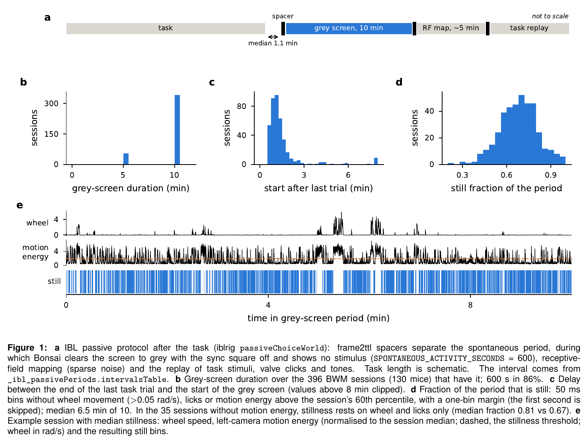
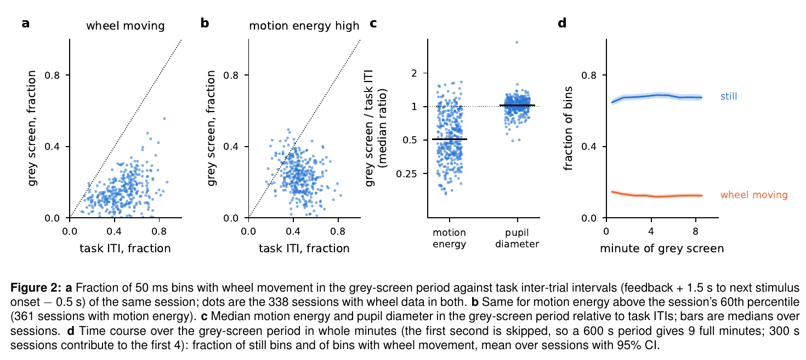
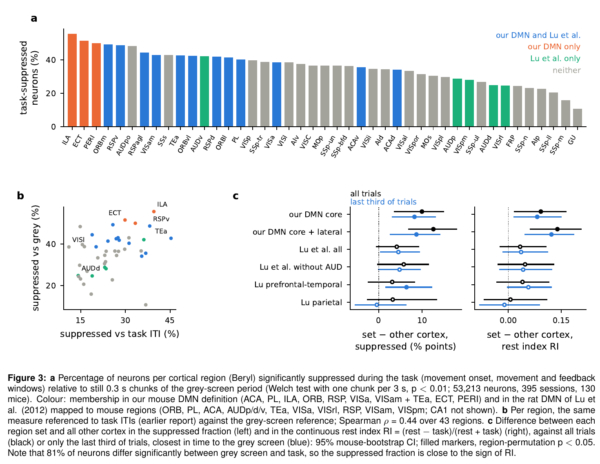
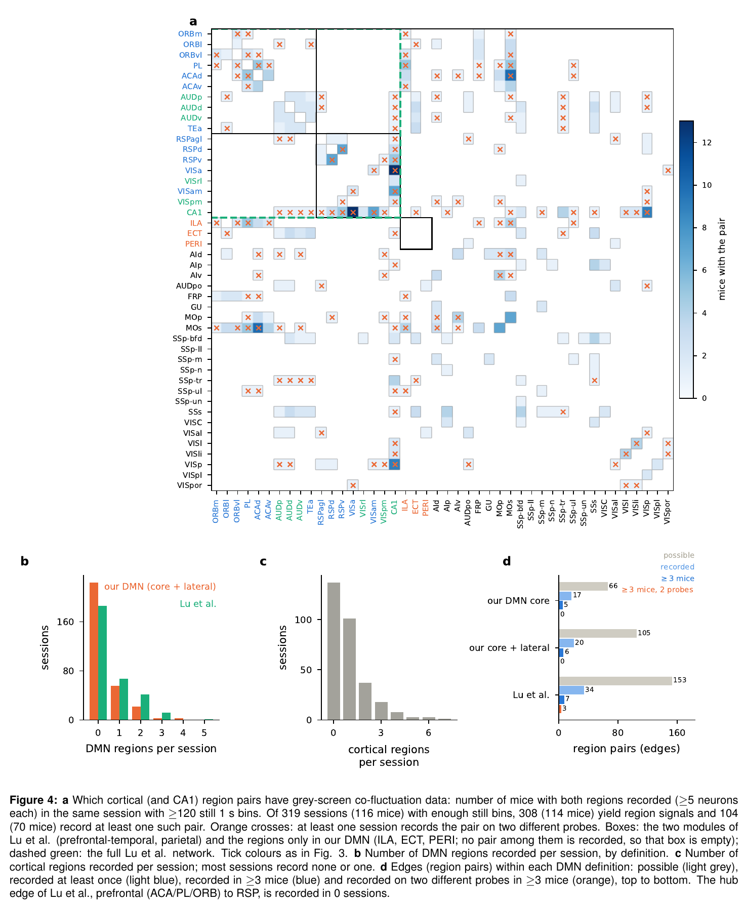
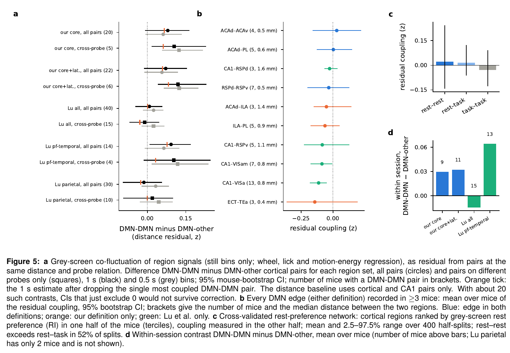
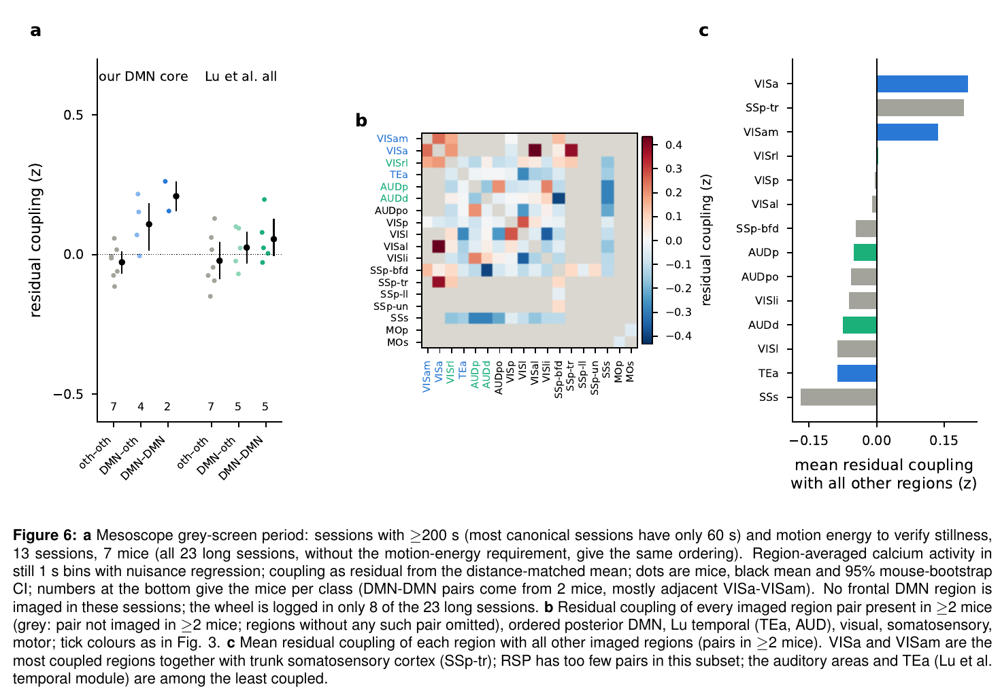

IBL Brain Wide Map · default mode network pilot · v3, 17 Oct 2026
DMN on the grey screen
International Brain Laboratory, Michael Schartner, Claude Opus 5.5
After the task, every BWM session has a 10-minute period in which the screen is uniformly grey and nothing happens. It is the closest thing the dataset has to a resting-state scan. This report describes that period, redoes the default-mode-network (DMN) analyses on it, maps which region pairs can be tested at all, and compares the result with the rat DMN of Lu et al. (2012). An earlier report used the task inter-trial intervals (ITIs) as rest; where results come from there, it says so.
Abstract
The grey-screen period is the first block of the IBL passive protocol. It starts a median 1.1 min after the last trial and lasts 600 s in 86% of 396 sessions (300 s in the rest). The mice are calmer than in task ITIs: the wheel moves in 14% of 50 ms bins instead of 48%, and motion energy is half as high, while pupil size is unchanged. Stillness comes in short bouts (median 0.85 s); a median of 6.5 of the 10 minutes passes a strict stillness criterion. Measured against this rest, our DMN regions (core plus lateral) are more task-suppressed than the rest of cortex: on average 44% of neurons per region against 31% (p < 0.001). This holds against higher-order cortex alone, against only the last third of trials (a control for drift across the session), and for the continuous rest index. The rat DMN of Lu et al. does not stand out as a set: it adds auditory cortex, VISrl and VISpm, which are task-driven in mice. Resting-state coupling between DMN regions, the defining feature of the fMRI network, is essentially untestable. Of 153 possible region pairs of the Lu et al. network, 7 are recorded in at least 3 mice, and the prefrontal–retrosplenial edge that Lu et al. identify as the hub connection is never recorded. On the pairs that exist, there is no evidence that DMN regions couple preferentially, and the data could only detect large effects. The mesoscope images posterior DMN together with sensory cortex. There, VISa and VISam are among the most coupled regions, but they do not form a separate block. In short, the BWM supports a task-negative DMN profile but cannot test a resting-state DMN network.
1. What the grey-screen period is
The passive protocol (iblrig passiveChoiceWorld) runs after the task, with the mouse still head-fixed at the rig. Its Bonsai workflow clears the screen to Gray, keeps the sync square off and runs only a timer for SPONTANEOUS_ACTIVITY_SECONDS (600 s by default). Frame2ttl spacer patterns before and after the block let ibllib extract it into _ibl_passivePeriods.intervalsTable (column spontaneousActivity). Receptive-field mapping (sparse noise, about 5 min) and the replay of task stimuli, valve clicks and tones follow. During the grey screen no reward is given and nothing is shown, so it is the IBL equivalent of an awake resting state.
Coverage: 396 of 426 extracted BWM sessions (130 mice) have the interval; the other 30 have no passive data.
When: always after the task, a median 1.1 min after the last trial (5–95%: 0.6–3.9 min).
How long: 600 s in 341 sessions and 300 s in 55 (Figure 1). The first second is skipped in all analyses.

2. Is the mouse inactive?
Mostly, but not continuously. Compared with the task ITIs of the same session, the wheel and the face move far less. Pupil size is about the same, so the mice are not drowsier than during the task (Figure 2).
Per session, median (5–95%)
Grey screen
Task ITI
Fraction of 50 ms bins with wheel movement (338 sessions)
0.14 (0.03–0.30)
0.48 (0.20–0.72)
Fraction of bins with motion energy above the session's 60th percentile (361)
0.23 (0.08–0.38)
0.44 (0.27–0.65)
Motion energy, grey / ITI
0.51 (0.23–1.14)
Pupil diameter, grey / ITI
1.02 (0.76–1.25)
Still fraction of the period
0.69 (0.47–0.89)
Still time
392 s (203–513)
Median length of a still bout
0.85 s (0.25–2.45)
Fully still 1 s bins
212 (46–417)
Missing behaviour data: motion energy is missing for 35 sessions and the wheel for 58. Without motion energy, stillness rests on wheel and licks only and is more lenient (still fraction 0.81 vs 0.67). Section 3 repeats the main test without these sessions.
Licks: 107 sessions show more than 10 detected licks per minute on the grey screen, with no reward available. Part of this is probably lick-detection noise; lick bins are excluded either way.
Stillness is stable over time: the still fraction stays near 0.68 from the first to the last minute (Figure 2d).

3. Rest preference measured against the grey screen
Each neuron's activity during the task is compared with still 0.3 s chunks of the grey-screen period. Task activity is the per-trial mean of the movement-onset, movement and feedback windows. Our DMN regions are more suppressed than the rest of cortex, and the region ordering agrees with the earlier ITI-based analysis (Spearman ρ = 0.44 across 43 regions; Figure 3).
Region set vs other cortex
Suppressed, set / other
p (regions)
Mouse CI (% points)
Rest index p
Last third of trials, p
Our DMN core (12 regions)
43.0 / 33.0%
0.002
[3.7, 14.9]
0.021
0.001
Our DMN core + lateral (15)
44.0 / 31.4%
<0.001
[7.0, 17.9]
<0.001
<0.001
… vs higher-order cortex only
44.0 / 33.0%
<0.001
[5.4, 17.8]
<0.001
0.001
Our DMN core vs higher-order only
43.0 / 35.4%
0.016
[0.7, 13.7]
0.13
0.006
Lu et al., all cortical (17)
38.3 / 34.2%
0.18
[−0.5, 9.2]
0.38
0.060
Lu et al. without auditory (14)
39.7 / 33.9%
0.068
[−0.2, 11.4]
0.23
0.058
Lu prefrontal-temporal module (10)
38.2 / 35.1%
0.39
[−2.4, 8.3]
0.37
0.024
Lu parietal module (7)
38.5 / 35.3%
0.43
[−2.6, 13.3]
0.91
0.89
Suppressed: p < 0.01 in a Welch test of rest chunks (one per 3 s) against task trials, with rest above task; the fraction is averaged over regions. Rest index RI = (rest − task)/(rest + task). There are 53,213 neurons from 395 sessions and 130 mice. p values come from 20,000 region permutations; CIs come from a bootstrap over mice.
Most neurons differ: 81% of all neurons differ significantly between grey screen and task (suppressed or enhanced), so the suppressed fraction is close to the sign of RI. The continuous RI gives the same answer for core + lateral. For the core alone against higher-order cortex, RI is not significant (p = 0.13).
Drift: the grey screen comes about an hour after the task starts. Task-window rates themselves rise from the first to the last third of trials (median drift index +0.24 across cortical regions), so drift is real. But it is not DMN-specific (DMN vs other p = 0.11), and against only the last third of trials, closest in time to the grey screen, the DMN result is unchanged (core + lateral p < 0.001).
Verified stillness only: in the 361 sessions with motion energy (120 mice), core + lateral is still 43.6% vs 31.8% (p < 0.001).
Lu et al. set: it is not significant on any metric against all trials. The bootstrap CI and the permutation test disagree slightly at the margin, because they resample different things (mice vs regions).
ACAd is the exception: this core DMN region sits below the cortex median (34% suppressed, RI −0.11).

4. Which region pairs can be computed
Resting-state networks are defined by co-fluctuation, which needs two regions recorded at the same time. A region pair counts here if a session has at least 5 neurons in each region and at least 120 fully still 1 s bins. 319 sessions (116 mice) have enough still bins and 308 of them (114 mice) yield region signals, but only 104 (70 mice) record a cortical or CA1 pair at all. Most sessions record one or no cortical region (Figure 4c). In total there are 262 cortex–cortex pairs, 72 of them across probes.
Our DMN: 20 of 105 possible edges are ever recorded, 6 in at least 3 mice, and none on two probes in at least 3 mice.
Lu et al. network: 34 of 153 edges are recorded, 7 in at least 3 mice and 3 on two probes in at least 3 mice. All three involve CA1.
The hub edge is missing: Lu et al. find prefrontal cortex and RSP to be the hubs, linked along the midline. No session records prefrontal (ACA, PL, ILA, ORB) and RSP neurons together, on the grey screen or in the task ITIs. Between the two Lu modules there are 6 pairs, from 2 sessions.
Where the data are: recorded pairs cluster within frontal cortex (ACA, PL, ORB, ILA, MOs) and around VISa/VISam–CA1, which a single probe often passes through.
Every DMN edge (either definition) recorded in at least 2 mice, which is the complete list of testable DMN pairs:
Coupling: mean over mice; CI from a bootstrap over mice. Every recorded DMN edge links neighbouring areas (≤1.8 mm apart). None links frontal and posterior DMN.

5. Do DMN regions co-fluctuate on the grey screen?
There is no evidence that they do. Each region signal is the mean of z-scored neurons in still 1 s bins, after regressing out wheel, licks and motion energy. Each pair correlation is compared with cortical pairs at the same distance and probe relation (Figure 5).
All cortical pairs: DMN–DMN pairs are not more coupled than DMN–other pairs for our DMN (core +0.08 z, CI −0.01 to 0.16; 20 mice) or for the Lu network (+0.01, CI −0.04 to 0.06; 40 mice).
The Lu prefrontal-temporal module just excludes zero (+0.09, CI 0.01 to 0.17; 14 mice). With about 20 such contrasts tested, this would not survive correction.
Cross-probe pairs avoid shared signal between neighbouring sites. For our core they give +0.11 (CI 0.02–0.23), but the result is fragile:
71% of the DMN–DMN pairs come from two frontal sessions, of mice SWC_038 and KS046.
Dropping the single most coupled pair (ORBm–ORBvl) lowers the estimate to +0.06.
Only 5 of the 20 mice with DMN–DMN pairs contribute.
DMN–DMN pairs are also closer together than DMN–other pairs (median 1.8 vs 2.7 mm), and the distance correction is coarse at these distances.
Power: with these numbers, the smallest DMN–DMN excess detectable with 80% power is about 0.12–0.15 z for our DMN and 0.07–0.08 z for the whole Lu network (up to 0.18 for its modules). The mean pair coupling itself is only 0.07 (cross-probe) to 0.10 (same probe), so only an effect larger than typical coupling could be detected.
Single edges recorded in ≥3 mice are compatible with zero, except CA1–VISa (−0.11, CI −0.18 to −0.05) and CA1–VISam (−0.09, CI −0.17 to −0.01), which couple less than distance predicts.
Cross-validated rest-preference network: cortical regions that prefer rest in one half of the mice do not co-fluctuate more in the other half (rest–rest above rest–task in 52% of 400 splits).
Within session: DMN–DMN minus DMN–other in the same session is not different from zero (9–15 mice, all p > 0.27; Lu parietal has only 2 mice and is not tested).
State invariance: the same region pair in the same session couples similarly on the grey screen and in task ITIs (Spearman ρ = 0.39 over 3,516 pairs, 0.26 for cortex). Coupling structure is partly a fixed property of the recorded circuits, not specific to rest.
Bin size: 0.5 s bins (370 sessions) give the same picture (grey markers in Figure 5a).

6. Mesoscope comparison
The mesoscope images many dorsal areas at once, so it can test pairs the probes never record. Its passive protocol is shorter, though: 79 of 102 canonical sessions with passive data have only 60 s of grey screen. Of the 23 longer ones, 14 have motion energy to verify stillness and 13 of these (7 mice) yield region pairs; the wheel is logged in only 8. No frontal DMN region is imaged (Figure 6).
Posterior DMN regions are more coupled than other–other pairs: DMN–DMN +0.22 z (CI 0.02–0.35). DMN–other is +0.14, with a CI of −0.003 to 0.20 that just includes 0.
The DMN–DMN pairs come from 2 mice: most are VISa–VISam pairs, which are adjacent and labelled from pre-histology estimates.
No segregated block: DMN–DMN is not above DMN–other (+0.09, CI −0.11 to 0.25).
Not specific to DMN regions: VISa and VISam rank with trunk somatosensory cortex as the most coupled regions. The Lu et al. temporal regions (AUDp, AUDd, TEa) are among the least coupled.
Grey screen and ITIs agree: this hub-like pattern matches the one in the task ITIs (earlier report, 45 sessions).

7. Comparison with Lu et al. 2012
Lu et al. (PNAS 109:3979) found a rat DMN with resting-state fMRI under light anaesthesia (dexmedetomidine plus 0.25–0.5% isoflurane). They scanned 16 rats in 119 sessions and used group ICA with 30 components. Their modularity analysis split the network into a prefrontal-temporal and a parietal module, with prefrontal cortex and RSP as hubs. Their regions, mapped to mouse Beryl areas, and how each fares in the BWM grey-screen data:
Rat region (Lu et al.)
Mouse areas
Our DMN
Suppressed vs grey
RI
Mice
Pairs, max mice
Orbital (VO, LO, rMO)
ORBvl, ORBl, ORBm
yes
43, 41, 49%
0.00, 0.03, 0.12
6, 6, 5
3–4
Prelimbic (PrL)
PL
yes
40%
0.02
12
5
Cingulate (Cg1/Cg2)
ACAd, ACAv
yes
34, 36%
−0.11, 0.02
15, 8
10, 4
Auditory (Au1, AuD, AuV)
AUDp, AUDd, AUDv
no
29, 25, 42%
−0.12, −0.12, 0.02
4, 5, 5
2–3
Temporal association (TeA)
TEa
yes (lateral)
43%
0.06
6
3
Posterior parietal (PtPR, PtPD)
VISa, VISrl
VISa only
39, 25%
−0.01, −0.22
35, 5
15, 3
Retrosplenial (RSG, RSD)
RSPv, RSPd, RSPagl
yes
49, 42, 44%
0.06, 0.00, −0.02
20, 21, 15
3–7
Medial secondary visual (V2M)
VISam, VISpm
VISam only
43, 28%
0.02, −0.08
15, 10
8, 5
Dorsal hippocampus (CA1, tentative)
CA1
no
45%
0.03
80
20
Not in Lu et al.
ILA, ECT, PERI
yes
56, 52, 50%
0.18, 0.20, 0.18
7, 6, 4
1–5
Cortex median: 37% suppressed, RI −0.03. The mapping of rat PPC and V2M to mouse VISa/VISrl and VISam/VISpm is approximate. "Pairs, max mice" is the largest number of mice for any grey-screen pair involving the region.
Agreement: RSPv, ORBm, ORBl/ORBvl, TEa and VISam, which both definitions share, are above the cortex median. So are the regions only we include (ILA, ECT, PERI), which are the most suppressed of all.
Disagreement: mouse AUDp/AUDd, VISrl and VISpm, which Lu et al. include, are among the least suppressed. ACAd, part of both definitions, is also below the median. This is why the Lu set as a whole does not stand out.
State difference: Lu et al. scanned anaesthetised rats, where sensory cortex can join a slow intrinsic network without any task to drive it. The BWM mice are awake and have just finished an audio-visual task.
Their key result is untestable here: Lu et al.'s main claim is network structure (two modules joined by prefrontal–RSP hubs), and those are exactly the edges the BWM cannot test.
8. How convincing is this as resting-state network evidence?
Criterion for a resting-state DMN
Verdict
Evidence
A true rest period exists in the data
Yes
10 min grey screen in 396 sessions, about 6.5 min of it still
DMN regions are deactivated by the task relative to rest
Yes
44% vs 31% suppressed (core + lateral), p < 0.001; holds vs higher-order cortex, vs the last third of trials, and vs ITIs
The deactivated regions match the literature
Partly
ILA, ORB, RSPv, TEa yes; ACAd and Lu et al.'s auditory, VISrl and VISpm no
DMN regions co-fluctuate at rest more than with other regions
Not shown
All-pair contrasts include 0; the cross-probe excess rests on 2 sessions; detectable effect ≥0.12 z
Frontal and posterior DMN are coupled (the hub edge)
Untestable
Never co-recorded in BWM; frontal DMN not imaged in the mesoscope
Rest-preferring regions form a network
Not shown
Cross-validated: 52% of splits, at chance
Posterior DMN regions couple with each other (mesoscope)
Weak
Above other–other, but not above DMN–other; DMN–DMN pairs from 2 mice; hub-like, not segregated
The grey screen makes the task-negative result cleaner, and the regions involved overlap with the rodent DMN literature, though not with every region of Lu et al. It does not turn the BWM into resting-state network evidence. A DMN is defined by which regions fluctuate together at rest, and BWM probes rarely record two DMN regions at once; they never record the frontal and retrosplenial parts together. A convincing test needs simultaneous frontal and posterior recordings with a long grey-screen block: multi-probe sessions targeting ACA/PL and RSP, or wide-field or mesoscope imaging that includes medial frontal cortex.
Methods
Data
BWM: 2023 release, all bwm_query insertions, good units. Spike counts are binned at 50 ms over the whole recording, with wheel speed, licks, left-camera motion energy and pupil diameter on the same grid.
Grey-screen interval:spontaneousActivity from _ibl_passivePeriods.intervalsTable; the first second is skipped.
Mesoscope: canonical sessions, deconvolved ROI activity in 1 s bins. Only sessions with ≥200 s of grey screen and with motion energy are used.
Stillness
50 ms bins: a bin is still if wheel speed is ≤0.05 rad/s, no lick is detected and motion energy is at or below the session's 60th percentile. For rest preference and the movement statistics, one bin on either side of any movement is also excluded.
Coupling: a 1 s (or 0.5 s) bin is used only if all its 50 ms bins are still (no extra margin).
Rest preference (Figure 3)
Rest samples: 0.3 s chunks of consecutive still grey-screen bins. The rate uses all chunks (median 1,171 per session). The test uses the first chunk in every 3 s window (median 186), so the samples are roughly independent.
Task samples: per-trial rates in the movement-onset (−0.15–0 s), movement (0–0.15 s) and feedback (0–0.3 s) windows, averaged, using BWM trial criteria (median 381 trials).
Per neuron: Welch t-test between the two sample sets. Suppressed means p < 0.01 with rest above task. RI = (rest − task)/(rest + task). Neurons below 0.5 Hz are excluded.
Drift index: (last − first)/(last + first) of the task-window rate, comparing the last and first third of trials.
Higher-order cortex: AId, AIp, AIv, AUDd, AUDpo, AUDv, FRP, MOs, SSs, VISal, VISl, VISli, VISpl, VISpm, VISpor and VISrl. This is cortex outside our DMN and outside the primary areas (VISp, SSp, MOp, AUDp, GU, VISC).
Region tests: regions need ≥20 neurons in ≥2 sessions. The mean over set regions minus the mean over other cortex is tested by region permutation (20,000) and mouse bootstrap (1,000).
Co-fluctuation (Figures 4–6)
Nuisance regression: per neuron, wheel, licks and motion energy (each with a 1-bin lag; no lags in the mesoscope) are regressed out within the still bins.
Region signal: mean of z-scored neurons per region and probe (≥5 neurons; ≥10 ROIs in the mesoscope), with split-half reliability. Mesoscope pairs need reliability ≥0.5.
Coupling: Fisher z of the pair correlation minus the mean z of cortical (and CA1) pairs in the same 0.5 mm 3-D distance bin and probe relation. The mesoscope uses ML–AP distance with hemispheres folded.
Classes: DMN–DMN, DMN–other and other–other cortical pairs; CA1 is added for the Lu all and Lu parietal sets. Differences are bootstrapped over mice (2,000). The detectable effect is 2.8 × the bootstrap standard error.
Rest-preference network: cortical regions are split into terciles of grey-screen RI in one half of the mice, and coupling is evaluated in the other half; 200 random splits × 2.
Post-task rest: this is rest after an hour of task under water restriction, not a naive resting state; the rats of Lu et al. were anaesthetised. Arousal, satiety and drift all differ between task and grey screen. Comparisons between regions are less affected than absolute levels.
Small correlations: mean region-pair correlations in still 1 s bins are 0.07 across probes and 0.10 within a probe, so coupling differences are subtle and need many mice.
Shared region signals: pairs that share a region signal are not independent. The mouse bootstrap handles this between mice but not within a session.
Mesoscope labels: mostly pre-histology estimates; RSP is at the edge of most fields of view. Pairs are not split by field of view.
Code:
~/default_mode_network/bwm/: 40_spont_characterize.py, 42_spont_A.py (G_full; G_me me_only), 21_full_B.py spont motion 1 still (and 0.5) and 41_spont_network.py;